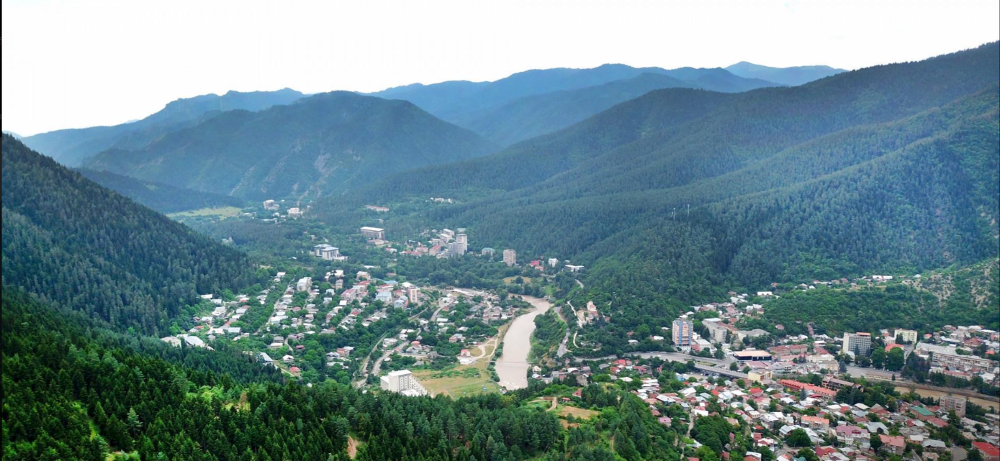

Borjomi municipality is located in Samtskhe-Javakheti region, on the historical side of Georgia, on the territory of Tori. In the middle of the feudal period, Tori (today's Borjomi municipality) was a separate sadrosho (military territorial unit), which was headed by the ancestors of Toreli. Subsequently, it was included in the board of the Atabegs, and in the XVI century it was conquered by the Ottomans. In the XVII-XVIII centuries the kingdom of Kartli returned Tori. Borjomi is a region of ancient culture and beautiful nature and there are many interesting monuments of different eras. Its nature, with forests, fresh air, healing and mineral waters, alpine fields and lakes hidden in the green, attracts many tourists and travel lovers. The ski and balneological resorts of Borjomi are very popular, where, along with a pleasant stay and enjoying the beautiful nature, you can visit pre-Christian cyclopean buildings, medieval temples and fortresses.
Borjomi Municipality is located in the south of Georgia in the Samtskhe-Javakheti region. It’s administrative center is Borjomi. It is divided into 11 administrative units, these include: Akhaldaba, Bakuriani, Balanta, Borjomi, Dviri, Tabatskuri, Tadzrisi, Tba, Kvibisi, Tsikhisdzhvari, Tsagveri. Borjomi municipality borders Akhaltsikhe to the west, Aspindza and Akhalkalaki in the south, Tsalka in the east, Kharagauli, Khashuri, Kareli and Gori in the north. A significant part of the district is the Borjomi Gorge. It also includes part of the small Caucasus, the western end of the Trialeti Range and the eastern end of the Meskheti Range. Within the municipality there are branches of the Trialeti Range - the Gvirgvini range and Tsikhisdzhvari, the peaks of which reach 2000-2850 meters above sea level. Between the Trialeti branch of the ridge, the Tory basin is located. The municipality crosses the Mtkvari River. Its right side merges Bordjomula and Gujaretistskali. Rivers are used for both, irrigation and energy purposes. There are many lakes in Borjomi. Among them, Tabatskuri and Kahisi, in addition to beauty, are also rich in precious fish. The region has many mineral springs, which are its main fossil wealth. In the municipality of Borjomi, the subtropical transition from continental subtropics to marine subtropics is a transitional climate with cold winters and long summers. The average  annual temperature in January is -3 - -6 ° C; and in August 14-18 ° C.
Borjomi Municipality is one of the best places for recreation, mountain sport, hiking or to get acquainted with centuries-old patterns of Georgian culture. There are a lot of hiking trails with forests, panoramic views and lakes. You should definitely visit the Borjomi sulfur basin for relaxation. There are many important monuments of different eras and cultures in the area: megaliths of a thousand-year history, the remains of ancient culture, fortresses, that have witnessed many battles and courage, the famous and outstanding temples, that tell a lot about the past and cultural development of Georgia. The XIX century architecture of Borjomi is also very interesting.
translate to Georgia